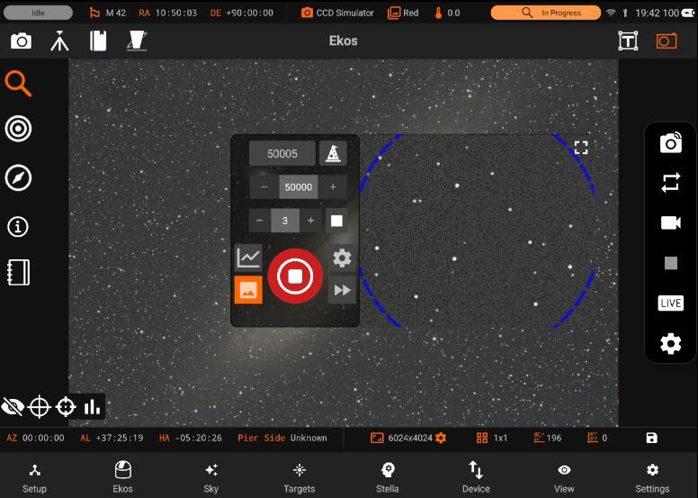
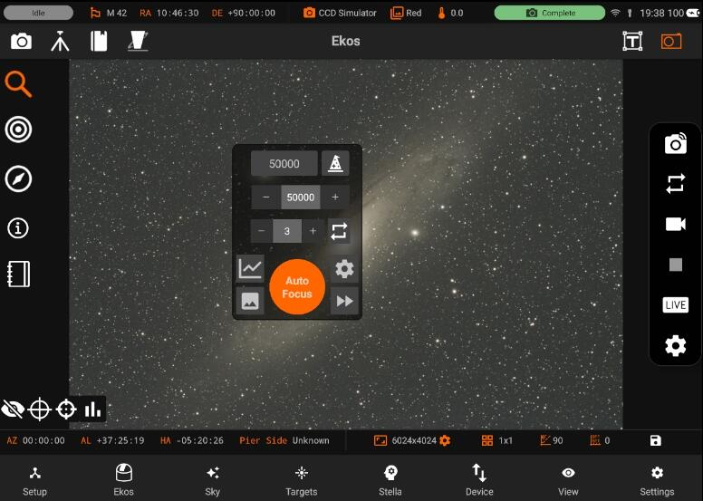
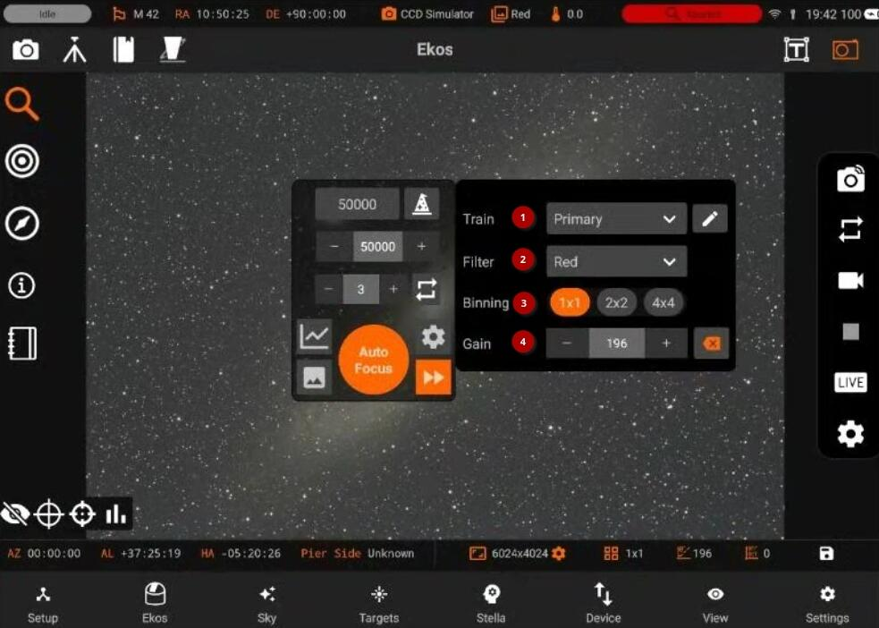
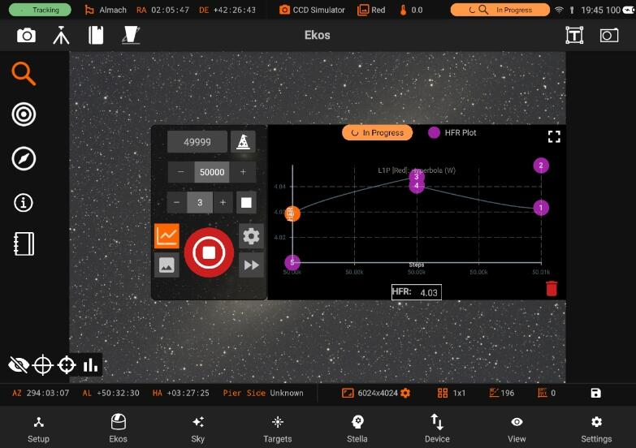
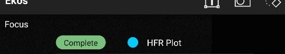

Focus
In order to focus an image, Ekos needs to establish a numerical method for gauging how good your focus is. It's easy when you look at an image and can see it as unfocused, as the human eye is very good at detecting that, but how can Ekos possibly know that?
The most tried and tested method is Half-Flux-Radius (HFR), which is a measure of the width in pixels counting from the center of the star until the accumulated intensity is half of the total flux of the star. As you move closer to the point of optimum focus, so the HFR gets smaller, reaching a minimum at the point of focus before increasing as you start to move away from focus. HFR has been used on lots of different types of equipment and has proved to be stable in a wide range of circumstances.
The Focus module allows you to do focusing using your focuser, it has the following features:
- Manage / Select Optical trains.
- Goto absolute motor step
- Preview
- Loop
- Advanced options (settings, process, mechanics)
- Image viewer

- HFR Plot
Now you can drag the Focus module to any part of the screen using gestures

Quick Settings

- Train
You can Select / Edit a train specifically for Focus module. Each module has it's own train. Visit Optical trains topic for more.
- Filter
- Binning
- Gain
There are 3 ways to Autofocus in Ekos. Here, I've setup an example that covers each:
1. Use Autofocus on the designated filter. In the example, Lum is configured like this. Whenever the Lum filter is selected in a sequence, Autofocus will be run on Lum.
2. Use Autofocus on a "lock" filter. In the example, Sii, Ha and Oiii are configured like this. Whenever Sii, Ha or Oiii are selected in a sequence, Autofocus will be run on Lum. When Autofocus completes (for example at 37273), Focus will apply the offset to go from Lum to, for example, Ha (in this case (-23 - 0) = -23 ticks. The focuser moves to 37273 - 23 = 37250 and Ha will again be selected in the filter wheel.
3. Don't use Autofocus but apply offsets on filter change. Red, Green and Blue have been setup like this. For example, when swapping from Red to Green, no Autofocus will be run and the focuser will from its current position (e.g. 37118) by the offset different between Red and Green. In this case, 4 - (-21) = 25 ticks. So the focuser moves to 37118 + 25 = 37143 and Green will be selected in the filter wheel.
2. So how do I setup Filter Offsets?
You can do it manually by running Autofocus several times and getting an average focus position for each filter. Then do the maths yourself to work out the offsets and enter these numbers into the Offsets column in the Filter Settings popup.
3.6.5 Introduced the Build Filter Offsets utility, launched from the Filter Settings popup by pressing the Build Offsets button. This helps to automate the process. See the Build Offsets section in the Focus section of the Kstars Handbook
Auto focusing
You can do auto focusing by either keeping the preset setting as default or choosing an existing preset and then tapping on Auto Focus. The image viewer will show you the current image being captured by your camera, with a square around the detected star. An HFR Plot is also available on the right side of the screen to inform you about the current motor step and the HFR (Half-Flux-Radius). The blue points are the previous focus points, and the green point is the latest focus point. The HFR value is displayed under the HFR Plot.

When the Auto Focusing is done, the status badge above the HFR Plot will turn to green and say "Complete".
